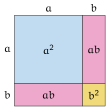

Algunos productos de polinomios aparecen con tanta frecuencia que conviene saber su resultado de memoria.
La primera identidad tiene una interpretación geométrica: el área de un cuadrado de lado \(a+b\) se divide en un cuadrado de lado \(a\), otro de lado \(b\) y dos rectángulos de lados \(a\) y \(b\).

5.4.1
Desarrolla:
\((x+4)^2\)
\((2x-5)^2\)
\((x+6)(x-6)\)
\((3x+1)^2\)
\((4x-y)^2\)
\((5-2x)(5+2x)\)
Lo que escribes se guarda solo en este navegador. Para entregarlo, pulsa «Copiar mis respuestas» y pégalo en Classroom.